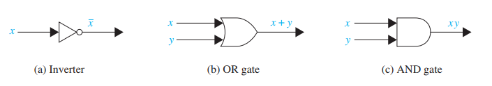
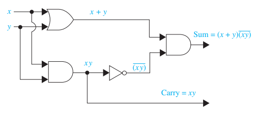
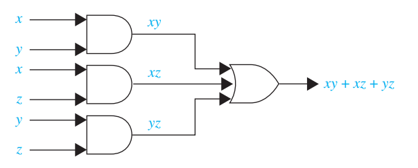
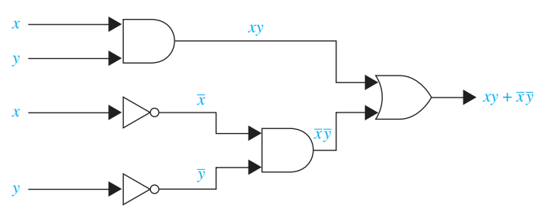

Boolean Algebra
Boolean Algebra
The circuits in computers and other electronic devices have inputs, each of which is either a 0 or a 1, and produce outputs that are also 0s and 1s. Circuits can be constructed using any basic element that has two different states. Such elements include switches that can be either in the on or the off position and optical devices that can be lit or unlit. Here we examine the basic properties of Boolean algebra - a set of operations and rules for working with the set \(\{0, 1\}\)
Boolean Values
- Operations and rules for working with set \(\{0,1\}\)
- Can be described as a variety of states that include an “on” and “off” such as
- 0:
FALSE, “off”, “no signal”, “unlit” - 1:
TRUE, “on”, “signal”, “lit”
- 0:
- Very useful in electronics!
Boolean Operators
- Boolean Sum: Denoted as \(+\) or by \(OR\). Has values:
\(1 + 1 = 1,\quad 1 + 0 = 1,\quad 0 + 1 = 1,\quad 0 + 0 = 0\)
- Boolean Product: Denoted as \(\cdot\) or by \(AND\). Has values:
\(1 \cdot 1 = 1, \quad 1 \cdot 0 = 0, \quad 0 \cdot 1 = 0, \quad 0 \cdot 0 = 0\)
- Complement: Denoted with a bar and is defined as:
\(\bar 0 = 1, \quad \bar 1 = 0\)
Boolean Functions
- Represented with expressions made up of variables and Boolean operators.
- Results of Boolean function are often displayed in a “Truth Table” where each combination of input is evaluated.
- \(F(x, y, z) = xy + \bar z\)
| \(x\) | \(y\) | \(z\) | \(xy\) | \(\bar z\) | \(F(x, y, z) = xy + \bar z\) |
|---|---|---|---|---|---|
| 1 | 1 | 1 | 1 | 0 | 1 |
| 1 | 1 | 0 | 1 | 1 | 1 |
| 1 | 0 | 1 | 0 | 0 | 0 |
| 1 | 0 | 0 | 0 | 1 | 1 |
| 0 | 1 | 1 | 0 | 0 | 0 |
| 0 | 1 | 0 | 0 | 1 | 1 |
| 0 | 0 | 1 | 0 | 0 | 0 |
| 0 | 0 | 0 | 0 | 1 | 1 |
Logic Gates
- Boolean algebra is used to model circuitry of electronic devices such as computers.
- Gates can be combined into circuits to perform useful functions.

Examples of circuit - Half Adder
The half-adder adds two binary numbers and gives a sum (0 or 1) and a carry (0 or 1) that instructs the next number to be carried. Consider (in binary) 1 + 1 = 10. This is the result we get with the half adder: sum of 0 (in the 1’s place) and a carry of 1 (in the 2’s place).

| Input-Output Table for Half-Adder | |||
| Input | Output | ||
| x | y | sum | carry |
| 1 | 1 | 0 | 1 |
| 1 | 0 | 1 | 0 |
| 0 | 1 | 1 | 0 |
| 0 | 0 | 0 | 0 |
Examples of circuit - Majority Vote
Consider: a committee of three people decide issues. Each individual votes yes (1) or no (0) for each proposal which passes if it receives at least 2 votes. The circuit here will produce a result of 1 if two or more people vote yes.

Examples of circuit - Two switches
Sometimes a light fixture is controlled by more than one switch, a circuit needs to be designed so that flipping any one switch changes the state of the light.

| Input-Output Table for Two-switch | ||
| x | y | \(F(x,y)\) |
| 1 | 1 | 1 |
| 1 | 0 | 0 |
| 0 | 1 | 0 |
| 0 | 0 | 1 |
Acknowledgements
- Facts and figures were adapted from “Discrete Mathematics and Its Applications” by Kenneth H. Rosen ISBN 9780073383095.